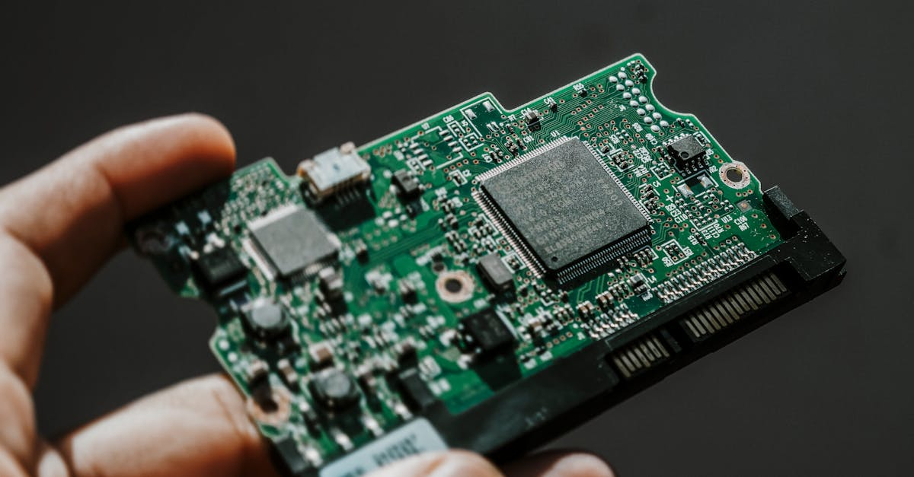

La Découverte Choc : Des Faux Ledger sur le Marché Chinois
Une récente investigation menée par un chercheur en cybersécurité a mis en lumière une faille alarmante dans l'écosystème des portefeuilles matériels de cryptomonnaies. Il a été découvert que des dispositifs contrefaits, se faisant passer pour des Ledger Nano S, étaient activement vendus sur une place de marché en ligne chinoise. Cette révélation soulève des questions cruciales quant à la sécurité des actifs numériques des utilisateurs et à la chaîne d'approvisionnement des dispositifs de stockage à froid. Le chercheur, dont l'identité n'a pas été entièrement divulguée pour des raisons de sécurité, a procédé à une analyse approfondie du firmware de l'un de ces appareils frauduleux. Les résultats de cette autopsie numérique ont rapidement orienté les soupçons vers un acteur majeur de l'industrie des semi-conducteurs en Chine : Espressif Systems. Cette entreprise est connue pour ses puces Wi-Fi et Bluetooth largement utilisées dans l'Internet des Objets (IoT). La présence de composants ou de firmwares associés à Espressif dans ces faux Ledger est particulièrement préoccupante, car elle suggère une potentielle exploitation de vulnérabilités connues ou l'intégration de portes dérobées (backdoors) dès la conception de ces appareils contrefaits. L'objectif de ces contrefaçons est clair : dérober les clés privées des utilisateurs, et par extension, l'intégralité de leurs fonds en cryptomonnaies. La confiance que les investisseurs placent dans des dispositifs réputés sécurisés comme les Ledger est ainsi mise à mal par ces pratiques malveillantes. Cette affaire met en évidence la nécessité d'une vigilance constante et d'une vérification rigoureuse de la provenance des matériels de sécurité, surtout dans un marché mondialisé où les chaînes de production peuvent être complexes et opaques. Les implications pour la sécurité globale des cryptomonnaies sont considérables, car une seule brèche dans un portefeuille matériel peut entraîner des pertes financières dévastatrices pour l'utilisateur concerné.
👉 À lire : Fausse application Ledger sur l'Apple Store : 9,5 millions de dollars de crypto volés

Espressif Systems : Un Acteur Clé au Cœur de la Contrefaçon
L'analyse du firmware des faux Ledger a révélé des indices troublants pointant vers Espressif Systems, une entreprise chinoise spécialisée dans la conception de puces Wi-Fi et Bluetooth, notamment les populaires séries ESP8266 et ESP32. Ces puces sont omniprésentes dans le monde de l'IoT, grâce à leur faible coût et leur facilité d'intégration. La découverte de traces d'Espressif dans le firmware de ces dispositifs frauduleux soulève plusieurs hypothèses. Il est possible que les contrefacteurs aient utilisé des modules ESP comme composants principaux pour construire leurs faux portefeuilles matériels, profitant de leur disponibilité et de leur coût modique. Une autre possibilité, plus inquiétante, serait que des firmwares modifiés ou des bibliothèques logicielles propres à Espressif aient été utilisés, intégrant potentiellement des fonctionnalités malveillantes. Bien qu'il n'y ait aucune preuve directe que Espressif Systems soit complice de ces activités illégales, l'utilisation de leurs composants ou de leur écosystème logiciel dans la fabrication de matériel de sécurité compromis est une source de préoccupation majeure. Les chercheurs soulignent que le firmware examiné présentait des caractéristiques qui rappelaient fortement l'architecture logicielle typiquement associée aux produits Espressif. Cela pourrait signifier que les contrefacteurs exploitent soit des vulnérabilités non corrigées dans les outils de développement d'Espressif, soit qu'ils intègrent des modifications au niveau du firmware pour atteindre leurs objectifs malveillants. L'ampleur de l'utilisation des puces Espressif dans divers appareils électroniques rend la détection de telles manipulations particulièrement complexe. Pour les utilisateurs de cryptomonnaies, cette implication potentielle d'un fournisseur de composants aussi répandu ajoute une couche supplémentaire d'incertitude quant à la sécurité de leurs investissements, même lorsqu'ils achètent des produits réputés auprès de marques établies.
👉 À lire : Sécurité Crypto : Wall Street sceptique face aux promesses
Les Risques Immédiats pour les Investisseurs en Cryptomonnaies
L'existence de faux portefeuilles matériels, comme ces Ledger contrefaits, représente une menace directe et immédiate pour la sécurité des fonds en cryptomonnaies. Contrairement aux portefeuilles logiciels qui peuvent être piratés via des attaques en ligne, les portefeuilles matériels sont conçus pour isoler les clés privées hors ligne, les rendant théoriquement immunisés contre le piratage à distance. Cependant, l'acquisition d'un dispositif compromis dès le départ annule cette protection fondamentale. Les utilisateurs qui achètent ces faux appareils, souvent à des prix attractifs sur des plateformes non officielles, risquent de voir leurs clés privées enregistrées et transmises aux fraudeurs dès la première utilisation ou lors de la configuration initiale. Une fois les clés privées compromises, les fraudeurs ont un contrôle total sur les fonds stockés sur l'adresse correspondante. Ils peuvent alors transférer les cryptomonnaies vers leurs propres portefeuilles, rendant la récupération des fonds quasiment impossible. Les conséquences financières peuvent être catastrophiques, allant de la perte totale des investissements à des dettes considérables, en particulier pour les investisseurs qui détiennent des sommes importantes. La confiance, élément essentiel dans l'écosystème des cryptomonnaies, est ébranlée. Les utilisateurs peuvent devenir méfiants non seulement envers les dispositifs matériels, mais aussi envers l'ensemble du marché, freinant ainsi l'adoption et la croissance du secteur. La complexité du marché des cryptos, combinée à la sophistication croissante des techniques de fraude, rend la tâche de sécuriser ses actifs particulièrement ardue pour le particulier moyen. Les chercheurs en cybersécurité jouent un rôle crucial dans l'identification de ces menaces, mais la responsabilité finale incombe également aux utilisateurs de faire preuve de la plus grande diligence.
Stratégies de Défense : Comment Protéger Vos Actifs Numériques
Face à la prolifération des menaces telles que les faux portefeuilles matériels, il est impératif d'adopter des stratégies de sécurité robustes pour protéger ses cryptomonnaies. La première ligne de défense consiste à acheter des dispositifs de stockage à froid uniquement auprès de sources officielles et fiables. Cela signifie privilégier les sites web des fabricants (comme Ledger.com) ou des revendeurs agréés de confiance. Évitez absolument les plateformes de commerce en ligne génériques ou les annonces trop alléchantes, qui sont souvent le terrain de jeu des fraudeurs. Lors de la réception d'un nouveau portefeuille matériel, une vérification minutieuse s'impose. Assurez-vous que l'emballage est intact et scellé conformément aux standards du fabricant. Vérifiez l'absence de signes de manipulation ou de modifications physiques. L'étape la plus critique est la génération et la sauvegarde de la phrase de récupération (seed phrase). Ce mot de passe maître, composé généralement de 12 ou 24 mots, est la clé ultime de vos fonds. Notez-la soigneusement sur un support physique (papier, métal) et conservez-la dans un endroit extrêmement sûr, à l'abri des regards et des accès non autorisés. Ne la stockez jamais numériquement (photos, fichiers texte, emails). Lors de la configuration, le dispositif devrait générer une nouvelle phrase de récupération. Si le dispositif vous demande d'entrer une phrase préexistante, c'est un signal d'alarme majeur, indiquant qu'il est potentiellement compromis. De plus, maintenez toujours le firmware de votre portefeuille matériel à jour. Les fabricants publient régulièrement des mises à jour pour corriger les vulnérabilités de sécurité découvertes. Utilisez les applications officielles fournies par le fabricant pour gérer vos cryptomonnaies et interagir avec votre portefeuille matériel. Enfin, une bonne hygiène numérique générale est essentielle : utilisez des mots de passe forts et uniques pour vos comptes d'échange, activez l'authentification à deux facteurs (2FA) partout où c'est possible, et soyez extrêmement prudent face aux emails et messages suspects de phishing.
L'Intelligence Artificielle au Service de la Sécurité Crypto
Dans un paysage de menaces cybernétiques de plus en plus sophistiqué, l'intelligence artificielle (IA) émerge comme un outil puissant pour renforcer la sécurité dans l'univers des cryptomonnaies. Les agents IA, capables d'analyser d'énormes volumes de données en temps réel, peuvent jouer un rôle déterminant dans la détection précoce des activités frauduleuses et l'identification des vulnérabilités. Par exemple, des algorithmes d'IA peuvent être entraînés à surveiller les transactions sur la blockchain à la recherche de schémas suspects, tels que des mouvements de fonds inhabituels, des tentatives d'accès non autorisés aux portefeuilles, ou encore la propagation de logiciels malveillants ciblant les plateformes d'échange. Dans le contexte de la découverte de ces faux Ledger, une IA pourrait potentiellement analyser les données de vente sur les places de marché en ligne, identifier des listes de produits suspects basées sur des descriptions ou des prix anormaux, et alerter les autorités ou les fabricants. De plus, l'IA peut contribuer à la sécurisation des chaînes d'approvisionnement. En analysant les données de production et de distribution, elle pourrait aider à détecter des anomalies suggérant l'introduction de composants contrefaits ou la modification de dispositifs légitimes. Les chercheurs en cybersécurité peuvent utiliser des outils basés sur l'IA pour analyser le code des firmwares, identifier des signatures de malwares connues ou inconnues, et évaluer le risque potentiel associé à l'utilisation de certains composants, comme ceux d'Espressif Systems, dans des contextes sensibles. Pour les traders de cryptomonnaies, l'IA offre également des solutions de trading automatisé qui, bien que non directement liées à la sécurisation des portefeuilles, bénéficient d'une analyse de marché plus poussée et réactive, réduisant potentiellement l'exposition aux risques liés à la volatilité. En somme, l'intégration de l'IA dans les stratégies de cybersécurité crypto n'est plus une option mais une nécessité pour anticiper et contrer les menaces émergentes, protégeant ainsi les investisseurs et la stabilité de l'écosystème.
L'Impact sur la Confiance et l'Avenir des Hardware Wallets
Cet incident, impliquant la découverte de faux Ledger potentiellement liés à Espressif Systems, a un impact indéniable sur la confiance des utilisateurs envers les portefeuilles matériels, ces dispositifs longtemps considérés comme le summum de la sécurité pour les cryptomonnaies. La promesse d'une protection hors ligne contre les cyberattaques est un argument de vente majeur, et la remise en question de cette promesse, même par des contrefaçons, peut ébranler les fondations de cet argument. Les utilisateurs, déjà confrontés à la complexité technique et à la volatilité du marché des cryptos, ne devraient pas avoir à se soucier de la légitimité même du matériel qu'ils utilisent pour stocker leurs actifs durement gagnés. Cette affaire souligne une vulnérabilité systémique : la chaîne d'approvisionnement. Même si le fabricant d'origine (Ledger) met en œuvre des mesures de sécurité rigoureuses, des acteurs malveillants peuvent s'insérer dans le processus de distribution ou de fabrication pour introduire des produits compromis. L'implication potentielle d'Espressif Systems, un fournisseur de composants largement répandu, complique davantage la situation. Cela pourrait inciter les fabricants de hardware wallets à revoir leurs processus d'approvisionnement et de contrôle qualité, potentiellement en privilégiant des fournisseurs plus transparents ou en intégrant des mécanismes de vérification d'authenticité plus poussés au niveau matériel. À long terme, cet événement pourrait stimuler l'innovation dans le domaine de la sécurité des hardware wallets. On pourrait voir émerger de nouvelles technologies de protection contre la contrefaçon, des systèmes de certification plus stricts, ou même des approches alternatives de stockage sécurisé qui s'appuient davantage sur des logiciels vérifiables et des architectures décentralisées. Cependant, la confiance est une denrée rare et précieuse dans le monde de la finance décentralisée, et chaque incident de ce type représente un défi majeur pour sa restauration et son maintien. La capacité de l'industrie à répondre de manière transparente et efficace à ces menaces déterminera en grande partie l'avenir des hardware wallets et la confiance durable des investisseurs dans la sécurité de leurs actifs numériques.
Conclusion : Vigilance Accrue et Avenir de la Sécurité Crypto
La découverte de faux portefeuilles Ledger sur le marché chinois, avec des indices pointant vers Espressif Systems, est un rappel brutal que la sécurité dans l'espace des cryptomonnaies est un champ de bataille en constante évolution. Ces dispositifs frauduleux ne visent pas seulement à voler des fonds, mais aussi à saper la confiance fondamentale sur laquelle repose l'écosystème des actifs numériques. L'implication potentielle d'un fournisseur de composants aussi répandu qu'Espressif Systems souligne la complexité croissante des menaces et la nécessité d'une vigilance accrue à tous les niveaux de la chaîne de valeur, de la conception du matériel à l'achat par l'utilisateur final. Pour les investisseurs, la leçon est claire : la prudence est la mère de toutes les sûretés. Acheter auprès de sources officielles, vérifier méticuleusement les dispositifs reçus, et sécuriser sa phrase de récupération sont des étapes non négociables. L'avenir de la sécurité crypto dépendra de la capacité de l'industrie à innover et à s'adapter. L'intelligence artificielle, avec sa capacité à analyser des données complexes et à détecter des anomalies, offre des perspectives prometteuses pour identifier et contrer les menaces émergentes, qu'il s'agisse de transactions suspectes sur la blockchain ou de vulnérabilités dans les composants matériels. Alors que le marché des cryptomonnaies continue de mûrir et d'attirer un public plus large, la robustesse des mesures de sécurité deviendra un facteur déterminant pour l'adoption à grande échelle. Protéger les actifs numériques n'est pas seulement une question technique, c'est aussi une question de confiance et de transparence. Les fabricants, les chercheurs et les utilisateurs doivent collaborer pour construire un environnement numérique plus sûr, où les innovations technologiques, y compris celles de l'IA, sont exploitées pour déjouer les fraudeurs et garantir l'intégrité de l'écosystème crypto.